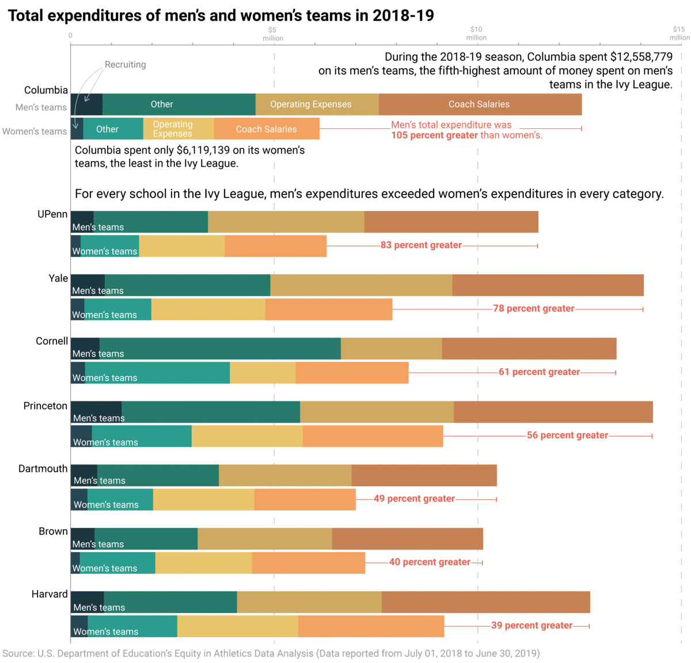
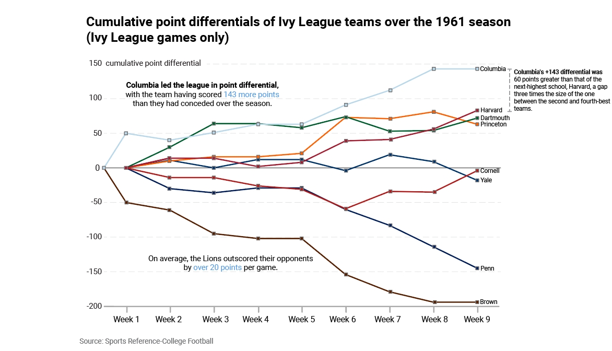
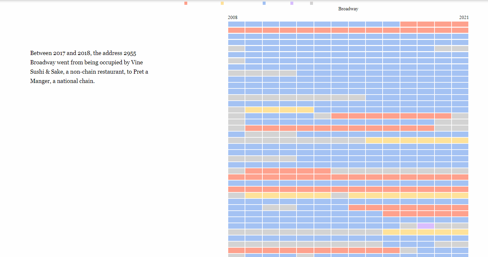

Hi! I'm a sophomore at Columbia University studying Mathematics, Economics, and Computer Science. I'm also a Graphics Reporter at the Columbia Daily Spectator, where I've worked on data visualization and analysis using tools such as pandas, Illustrator, and Javascript.
A deep dive into the widening gap in funding between men's and women's Athletics programs at Columbia University. Utilized EADA data published between 2011 and 2020.
Charted the cumulative point differentials of Ivy League teams over the 1961 season to illustrate the dominance of the Columbia Lions in their only Ivy League winning season.
Built an interactive HTML table with data tracking the rapid chainification of the restaurant landscape in Morningside Heights over the last decade.
Analyzed yearly changes in the salaries of 26 NYPD officers with complaints filed against them. Part of a Columbia Daily Specator article awarded finalist in the Society of Professional Journalists Mark of Excellence In-Depth Reporting (Large) category.
{kind=link}
{kind=link}
{kind=link}
{kind=link}